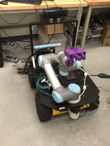

Projects
-

Non-Field-of-View Target Estimation
Introduce the capability of tracking and localizing human partners outside of the robots’ Field of View (FOV) to the co-robots for human-robot interaction.
-

Traffic Monitoring
A novel design of infrastructural traffic monitoring that performs vehicle counts, speed estimation, and vehicles classification by deploying three different approaches using infrared cameras and laser range finders.
-
 The Mohamed Bin Zayed International Robotics Challenge (MBZIRC)
Former team member of Virginia Tech team. Worked on Challenge 1 that requires UAV to locate, track and land on a moving vehicle.
Publication
Journal:
-
Reliable Infrastructural Urban Traffic Monitoring Via Lidar and Camera Fusion
Yi Tian, Hangxin Liu, Tomonari Furukawa
SAE International Journal of Passenger Cars-Electronic and Electrical Systems, 2017
Conference:
-
Learning Complex Functional Manipulations by Human Demonstration and Fluent Discovery (Accepted)
Mark Edmonds*, Feng Gao*, Xu Xie, Hangxin Liu, Siyuan Qi, Yixin Zhu, Brandon Rothrock, Song-Chun Zhu (*Equal contributors)
IEEE/RSJ International Conference on Intelligent Robots and Systems (IROS), 2017
-
A Glove-based System for Studying Hand-Object Manipulation via Pose and Force Sensing (Accepted)
Hangxin Liu*, Xu Xie*, Matt Millar*, Mark Edmonds, Feng Gao, Yixin Zhu, Veronica Santos, Brandon Rothrock, Song-Chun Zhu (*Equal contributors)
IEEE/RSJ International Conference on Intelligent Robots and Systems (IROS), 2017
-
Non-Field-Of-View Sound Source Localization Using Diffraction and Reflection Signals
Kuya Takami, Hangxin Liu, Tomonari Furukawa, Kumon Makoto, Gamini Dissanayake
IEEE/RSJ International Conference on Intelligent Robots and Systems (IROS), 2016
-
Design of Highly Reliable Infrastructural Traffic Monitoring Using Laser and Vision Sensors
Hangxin Liu, Yi Tian, Tomonari Furukawa
ASME International Design Engineering Technical Conferences and Computers and Information in Engineering Conference (ASME IDETC), 2016
-
Recursive Bayesian estimation of NFOV target using diffraction and reflection signals
Kuya Takami, Hangxin Liu, Kumon Makoto, Tomonari Furukawa, Gamini Dissanayake
ISIF International Conference on Information Fusion (FUSION), 2016